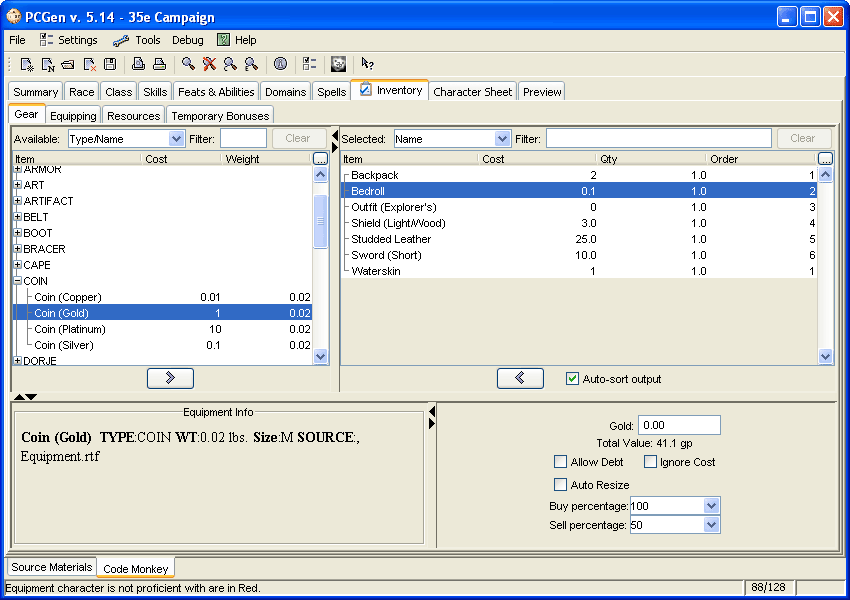

Main Tab: Inventory

The Inventory tab is where you purchase & equip items, animals and followers
that your character posesses. It is made up of a number of Sub-tabs:
- Gear - Purchaseing and selling equipment
- Equipping - Organising the items you own into euqipment sets. Determining which weapons and armour are used and in what hands
- Resources - Adding and creating followers & animal companions
- Temporary Bonuses - Adding temporary effects to be included on output sheets